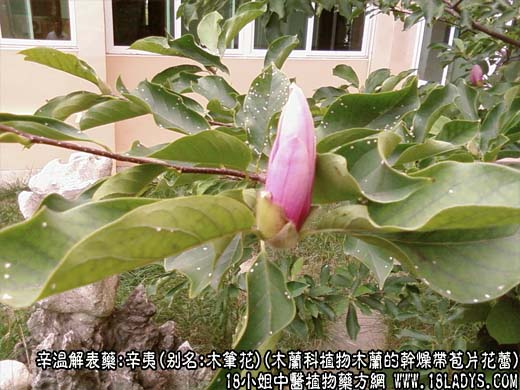
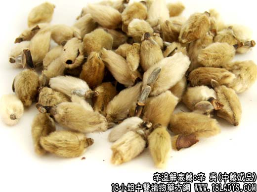
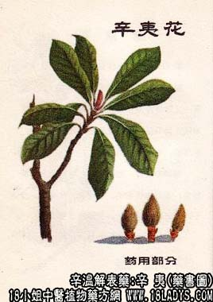

辛夷为常用中药。《神农本草经》列为上品。李时珍谓：”夷者荑也，其苞初生如荑而味辛故名。“
别名：木笔花，望春花。
来源：为木兰科植物木兰的干燥带苞片花蕾。
产地：主产于河南、湖北、浙江、安徽、陕西等地。
性状鉴别：本口形毛笔头，基部有木质短柄，花苞片生有黄绿色毛茸，花苞内有数层紧密相抱的棕紫色花瓣。中心有螺旋状排列的花蕊，红棕色。质轻脆，易分层，显油性，气辛香，味辛辣。以花蕾未开，毛茸黄绿，无枝梗者为佳。
主要成分：含挥发油，其中主要为柠檬醛，丁香油酚、茴香脑等。
功效与作用：通鼻塞、治头痛，现知其原理为：
1、局部收敛。以辛夷制剂外用滴鼻，可见鼻粘膜上产生蛋白凝固物，并使分泌物减少，但内服对鼻粘膜的影响尚有待进一步研究。
2、降压。动物实验有降血压作用，有效成分在非挥发部分中。
此外，辛夷煎剂、流浸膏对实验动物的子宫有兴奋作用；辛夷煎剂在试管内对常见致病性皮肤癣菌有较强的抗菌作用。
性味：辛温。
归经：入肺、胃经。
功能：散风、通鼻窍。
主治：感冒头痛，鼻塞，鼻渊。
临床应用：辛夷为治鼻渊（鼻窦炎）的常用药。可治疗由鼻窦炎、慢性鼻炎引起的头痛、鼻塞、鼻流浊涕。对急性鼻炎也有一定疗效。常配白芷、防风、细辛等同用，方如辛夷散；也可配苍耳子、荆芥、黄芩等。外用以乳剂和浓油最佳，油剂次之，煎剂又次之。
注意：辛夷不宜多服，否则易致头昏目赤。
用量：3~6g。
处方举例：辛夷散（《济生方》：辛夷、白芷、防风、细辛、升麻、藁本、川芎、木通、甘草，各等分为末，每服6g，清茶送下。
注：除上述品种外，尚有木兰科植物玉兰和望春花的干燥花蕾也作辛夷药用。药品形似相似，不易区分。